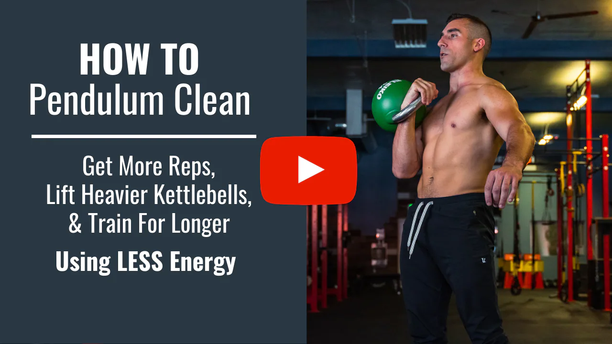

B245 · Get More Reps, Lift Heavier Kettlebells, and Train for Longer with LESS Energy
Hi {first_name},
In last week's Part 1 series covering the Kettlebell Clean, we discussed the mechanics of the Russian (hinge-based) Clean, as well as solving the primary challenge associated with it - banging the kettlebell onto the wrist/forearms.
When done properly, this particular technique is excellent at developing Power-Endurance, as well as the muscles on the backside of your body (hamstrings, glutes, and lower back).
There is however, more than one way to skin a cat. Depending on the specific goal or objective for your training, sport, or preferred activity, there is in fact another Clean technique worth considering - the Pendulum Clean.

The Pendulum Clean is still a "clean" movement - where the kettlebell swings below the waist, through the legs, and finishes in the rack position. However, many details happen in between that make this Clean mechanic very different from its Russian hinge counterpart.
You can think of both these techniques as keys that open different doors.
Click here to watch the full tutorial.
Why would you consider exploring the Pendulum Clean?
Click here to watch the full tutorial.
I hope you enjoy exploring this Pendulum Technique in your training!
Stay strong, Mike
P.S. I've got a surprise DOPE video coming very soon. It's an instructional training video that has been hidden for nearly a year and just surfaced detailing a fantastic Bulgarian Bag workout. I'll shoot you another email in the next 48 hours with more details so stay tuned. |